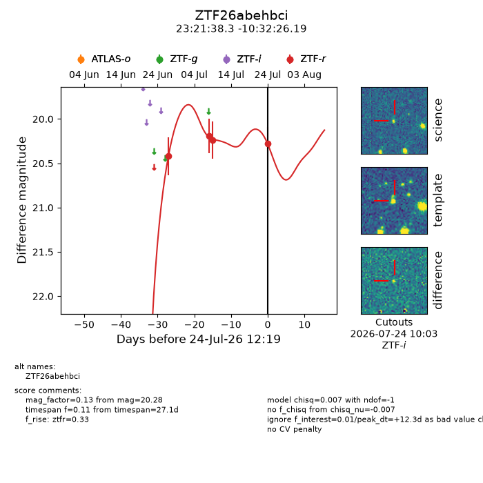
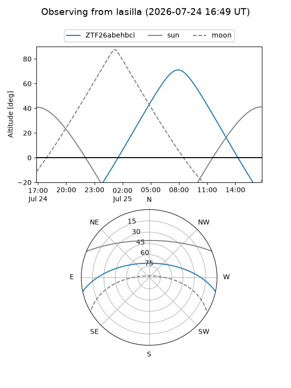
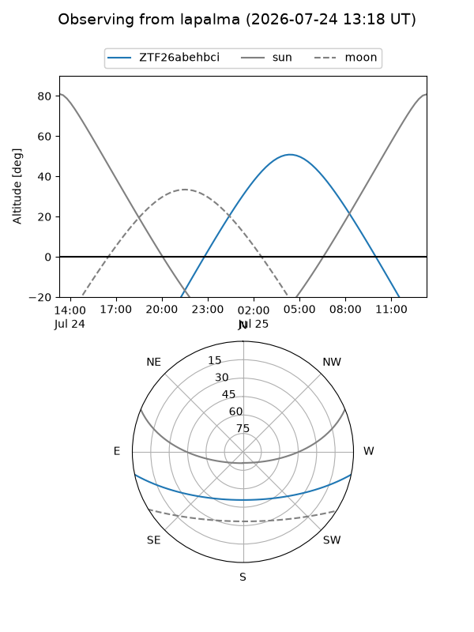
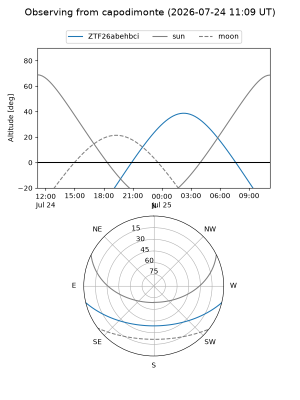
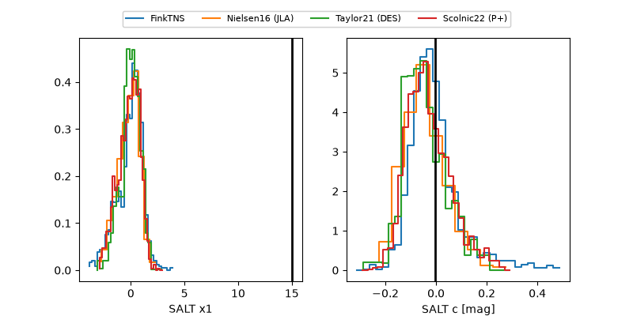

ZTF26abehbci
Target ZTF26abehbci at 2026-07-24 12:21
Aliases and brokers:
FINK-ZTF: ztf.fink-portal.org/ZTF26abehbci
Lasair-ZTF: lasair-ztf.lsst.ac.uk/objects/ZTF26abehbci
ALeRCE-ZTF: alerce.online/object/ZTF26abehbci
Direct TNS query: direct search
alt names
ZTF26abehbci (ztf,fink_ztf)
Coordinates:
equatorial (ra, dec) = 350.4097,-10.54061
equatorial (HMS+DMS) = 23:21:38.32,-10:32:26.19
galactic (l, b) = (66.7508,-63.13504)
Flags:
peak dt: +12.3
Photometry:
last ztfr=20.28
4 ztfr detections
Lightcurve

Visibility



Additional plots
